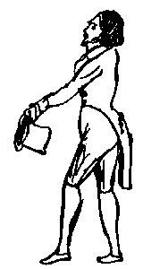
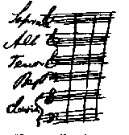
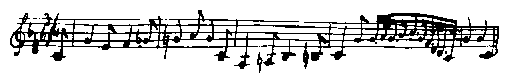

Letters of Frederick Engels
Source: MECW Volume 2, p. 528
Written: 8 March 1841
First published: in Marx/Engels, Gesamtausgabe, Abt. 1, Bd. 2, 1930
Dear Marie,
“Your most respectful and obedient”, these were the last words I wrote in a business letter as I finished my work at the office today so as — so as — now how can I express it most delicately? Oh well, the verses won’t flow today, so I'd better say it straight out: so as to write to you. However, as I am still digesting my lunch, I haven’t got time to think much and must write whatever comes into my head. But my first thought is a cigar, which I shall now proceed to light since His Majesty has taken himself off, His Majesty being, of course, the Old Man [Heinrich Leupold] who has been given this title because we have decided to carry on as if we were at Court.  For it is now quite certain and sure that the whole Leupold counting-house will soon be transformed and have ministers and confidential gentlemen-in-waiting once again. You will be amazed when you see me with a golden key hanging from my black tail-coat! will, of course, be as stuck-up as I have always been — and I'm not cutting off my moustache to please any king. It is now in full flower again and growing and when I have the pleasure — as I don’t doubt I shall — of boozing with you in Mannheim in the spring, you will be amazed at its glory.
Richard Roth left here a week ago for a grand tour of South Germany and Switzerland. Thank God that I too am leaving this dreary hole where there is nothing to do but fence, eat, drink, sleep and drudge, voilà tout. I don’t know if you have heard that Father and I shall probably be going to Italy at the end of April in which case I shall do you the honour of visiting you. If you behave properly I may even bring you something, but if you are high and mighty, stiff and haughty, then you will be in for trouble. Nor will you escape just punishment if you write any more such nonsense as you did in your last letter but one, teasing me about the fencing lesson. I was very glad to hear that the Stabat mater is by Pergolese.  You must in any case get me a copy of the piano arrangement containing all the vocal parts with the score showing the singing parts above those which have to be played, as in a piano arrangement of an opera. It occurs to me that there are no tenor or bass parts in Pergolese’s Stabat mater. There are probably more sopranos and altos instead. Never mind.
If I really do go to Milan in the spring I shall meet Roth, and Wilhelm Blank from Elberfeld, and we'll have a high old time there with Turkish tobacco and Lacrime di Christo. Six months after we've gone, the Italians should still be talking about the three jolly Germans, so famous do we intend to make ourselves.
I was very much amused to read your description of your innocent carnival. I should like to have seen you. Nothing very amusing has happened here, apart from a couple of boring fancy-dress balls which I didn’t go to. In Berlin, too, the carnival was a terribly flat affair. They're still best at that sort of thing in Cologne.
There is one thing in which you are less fortunate than I. You cannot hear Beethoven’s Symphony in C Minor today, Wednesday, March 10, while I can. This and the Eroica are my favourites. Practise Beethoven’s sonatas and symphonies well, so that I shan’t be ashamed of you later on. I am going to hear them not just in the piano arrangement, but played by the full orchestra.
March 11. What a symphony it was last night! You never heard anything like it in your whole life if you don’t know this wonderful work. What despairing discord in the first movement, what elegiac melancholy, what a tender lover’s lament in the adagio, what a tremendous, youthful, jubilant celebration of freedom by the trombone in the third and fourth movements! Besides this I also heard a wretched Frenchman sing yesterday and it went something like this:

and so on, no melody or harmony and a pathetic French text and the whole joke was called L'Exilé de France. If all French exiles indulge in such caterwauling then nobody will want to have them anywhere. This boor also sang a song called Le toréador, which means the bull-fighter, with the refrain, every other second, of Ah que jaime 1'Espagne! This was even more pitiful-if that were possible sometimes with leaps of fifths, sometimes twisting about in chromatic passages as if to signify an attack of stomach-ache. If it hadn’t been followed by the tremendous symphony I would have run away and left the crow to squawk in his miserable, thin baritone. Meanwhile see that the next letters you send are folded better. This way [X] is very unpractical and in bad taste, it must be like this [x] or like this [X] please note.
Semper Tuus
Friedrich